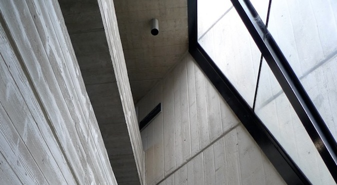
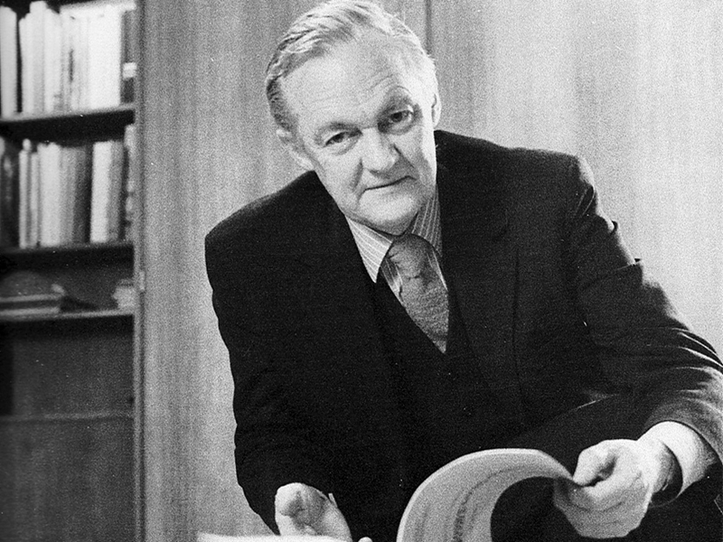

Churchill House was designed by Robin Boyd for the Winston Churchill Memorial Trust of Australia in 1969-70 and construction was completed in 1971. The building is an example of the Late Twentieth-Century Brutalist Style (1960-) with its large areas of blank wall and off-form concrete.
The complex comprises a number of components: the main building with its east and south wings, the separate north wing or pavilion, the pool and the rear carpark. The main building forms an L shape in plan, and with the north wing it encloses on three sides a courtyard in which the pool is located. The main building is of three storeys with a four storey lift tower at the southeast corner, the north wing is of two storeys, and the carpark is two storeyed.
History
Churchill House was built by the Winston Churchill Memorial Trust of Australia. The Trust began consideration of erecting a building of its own in 1967 and formed a building committee in 1968. In 1969 it acquired a lease for land on Northbourne Avenue, the current site, and engaged the architect Robin Boyd to design the building.
The building was to provide offices for the Trust and in addition was to provide rental office accommodation for commercial tenants as a means of generating income for the Trust. Features of the original design included:
A glass exhibition pavilion, on the site of the current north wing, which housed a display on the work of the Trust;
The flat roof area of the east and south wings which was intended to be a roof terrace; and
Acommodation in the building included a board room, dining room, reception area, bar and kitchen
The cost of the works was about $1 million. The building was officially opened on 14 April 1972.

Introduction
Churchill House, at 216 Northbourne Avenue in Braddon, was designed by Robin Boyd for the Winston Churchill Memorial Trust of Australia in 1969-70, and construction was completed in 1971. It was Boyd’s last major commission, and he died prior to its completion. It is one of a small number of larger designs produced by Boyd and was Canberra’s first brutalist building.
Several components make up the complex. The main building, with east and south wings; the separate north wing or pavilion; the central pool and a rear carpark. The main building forms an L shape and with the north wing it encloses a courtyard with a large ornamental pool. The main building is three storeys high with a four storey lift tower at the southeast corner. The north wing and the carpark are two storeyed.
Although it has undergone some alterations over the years, the building still displays key features of the brutalist style with its large areas of blank wall and use off-form concrete, sloping structural fins and precast concrete non-loadbearing wall panels, precast fins for sun protection, and vertical slit windows. Churchill House displays a fairly restrained form in comparison with the major Canberra buildings that followed in this style: Cameron Offices, National Gallery of Australia and High Court of Australia.
Significance
Churchill House is a good example of the Late Twentieth Century Brutalist style, (1960-), displaying several key features as follows:
Large areas of blank wall, especially the west wall of the south wing
Off-form concrete, such as the west wall of the south wing and the spandrels to the south and east wings
In addition, it displays a number of the other features of this style including: sloping structural fins, precast concrete non-loadbearing wall panels, precast fins for sun protection, and vertical slit windows. Churchill House is one of several Canberra examples of this style, and one of only two which display a restrained form reflecting, perhaps, a more conservative approach to the style because of the intended office use.
The architecture of this building may contribute to the education of designers in their understanding of Late Twentieth-Century Architectural Styles.
Churchill House has interest for its association with the prominent architect, Robin Boyd. The building was his last major commission.
Robin Boyd 1919 - 1971

Copyright Mark Strizic
Robin Gerard Penleigh Boyd (1919-1971) was a nationally and internationally renowned architect. He was also widely published and appreciated as an architectural critic.
Boyd had a prolific output of architectural designs, books and articles. He wrote over 700 articles for journals and newspapers, presented a TV series on Modernism.
His architectural work is mostly known through his residential designs. He was known for his ability to design houses that would meet client needs, solve site problems and still retain architectural integrity. The designs were heavily influenced by the functional and international styles of architecture and became known as the Melbourne Regional style. It was light, simple and elegant and unmistakably modern. (Architecture Today 1972; Saunders 1972; and Serle 1995)
Boyd’s later buildings are disappointing...”. Commentary in architectural journals and works on Boyd focus on his residential designs and larger Melbourne-based buildings. References to Churchill House mention that he was working on it at the time of his death, and the most favourable account comes from Serle’s 1995 biography that noted that it was the “only new work of any consequence” (p.308) and that tenders for “Boyd’s innovative design for Churchill House were surprisingly low” (p.309). Raisebeck (2017) noted that, “...Boyd’s works and writings from 1960- 1967 depict a relatively consistent commitment to a universal modernism tempered through a regional lense...exemplified in the earlier Zoology building”, while his later work demonstrates a stark change of focus and a less coherent whole with the different façades of Churchill House showing a different compositional treatment as a result of “...Boyd’s experimental bent and abandonment of an integrated and universal modernism.”
Boyd received the Royal Australian Institute of Architects Gold Medal in 1969 and was awarded a Commander of the Most Excellent Order of the British Empire (CBE) in 1971 for his services to architecture and government. In the same year he died suddenly from a stroke while recovering from an anaesthetic as part of treatment for an infection. As a result, his work on the Former Churchill House had to be completed by another architect, Bill Williams, who had been employed by Boyd to work on the project under the supervision of a more experienced architect, Neil Clerehan (who later designed the second storey of the north wing to replace the glass display pavilion). (Serle 1995)